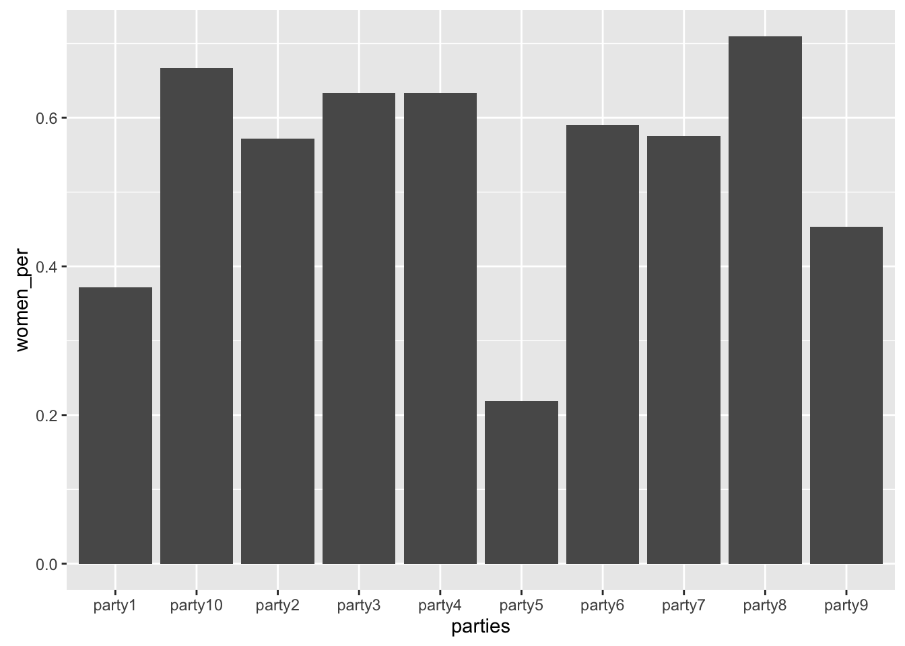
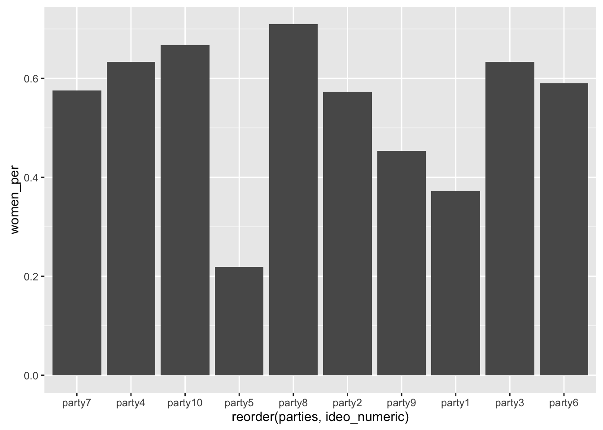

POL S/CS&SS 501, University of Washington, Winter 2016
$$ \DeclareMathOperator{\mean}{mean} \DeclareMathOperator{\var}{var} \DeclareMathOperator{\E}{E} \DeclareMathOperator{\MSE}{MSE} \DeclareMathOperator{\Bias}{Bias} \DeclareMathOperator{\SE}{se} \DeclareMathOperator{\SD}{sd} \DeclareMathOperator{\argmin}{argmin} \DeclareMathOperator{\argmax}{argmax} $$reordering-labels-plot
Andreu Casas
January 29, 2016
Learning Objectives
How to sort the values plotted in a graph by a specific variable
Sorting Labels of a Plot
We start by creating a simulated dataset with data about:
partiesName of political partiesideologyAn ideology score for that partywomen_perThe percentage of party candidates that are women
parties <- paste0("party", 1:10)
ideology <- sample(x = 1:10, size = 10, replace = FALSE)
women_per <- rnorm(n = 10, mean = 0.5, sd = 0.2)
dataset <-
data.frame(parties = parties,
ideology = ideology,
women_per = women_per)We use ggplot2 to create a barplot showing the percentage of women candidate by political party. However, in the x-axis, the parties are sorted alphabetically.
library(ggplot2)
ggplot(dataset, aes(x = parties, y = women_per)) +
geom_bar(stat = "summary", position = "dodge", fun.y="sum")
If we want to sort them by another variable (e.g. ideology), we need to specify so in the ggplot command using reorder().
ggplot(dataset, aes(x = reorder(parties, ideology), y = women_per)) +
geom_bar(stat = "summary", position = "dodge", fun.y="sum")Make sure the variable you are using to sort the axis is numeric, otherwise you will get an error and it won’t work.
dataset$ideology <- as.factor(dataset$ideology)
ggplot(dataset, aes(x = reorder(parties, ideology), y = women_per)) +
geom_bar(stat = "summary", position = "dodge", fun.y = "sum")If it’s not a numerical variable, change it so it is.
dataset$ideo_numeric <- as.numeric(dataset$ideology)
ggplot(dataset, aes(x = reorder(parties, ideo_numeric), y = women_per)) +
geom_bar(stat = "summary", position = "dodge", fun.y = "sum")

This work is licensed under a Creative Commons Attribution-NonCommercial-ShareAlike 4.0 International License. R code is licensed under a BSD 2-clause license.